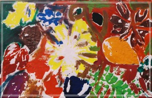

蘋婆與莉莉 薛幼春
莉莉本名叫黃庭煒，但是我們都習慣叫她的英文名字：Lily。
莉莉，今年八歲，兩年前到畫室學畫，她的外表安靜，內心充滿豐富的情感。她的畫作線條簡潔有力、構圖活潑大膽，具備超齡的成熟特質，無論畫靜物、動物，或是夢境，都充滿想像力，生動且率真。
某回，偕畫家劉老上陽明山平等國小渲講，因時間緊迫，活動結束後我火速趕回木柵，車子剛轉至巷口，我便發現在不遠處，有個小人兒倚著欄杆，在路燈下的身影，更顯得單薄、孤單。莉莉總是第一位到達畫室，卻最後離去的學生。
有一陣子莉莉沒來畫室上課。詢問原因，她的母親低泣著說：﹁莉莉生病了，罹患了惡性腫瘤。﹂那陣子她在學校與醫院之間兩地奔波，進醫院前一天，她的母親帶她到照相館，拍下莉莉如天使般的容顏。莉莉勇敢接受一連串艱辛的療程，她最大的願望就是：只要她她陪伴在身邊，身體趕快好起來，然後可以出院，回畫室上課。
後來，只要莉莉的身體狀況穩定，發燒不超過三十八點五度，她就會到畫室來上課，並跟其他小朋友嬉鬧、逗逗貓咪，否則她就得入院去接受治療。
莉莉回南部外婆家，在菜市場的攤位上看到赭紅欲滴的蘋婆，煞是好看，當場她央求母親，買了一大串，擱在懷裡，寶貝地捧回台北。
那一天，莉莉一家人返回台北時已經晚上十點，她迫不及待，捧著這串蘋婆到畫室，我恰巧外出不在，莉莉就在庭院等了我一個小時，直到她的母親擔心她的身體無法承受風寒，才悵然返回家去。
我回家之前，打開小柵欄，發現庭院的木椅上安靜地躺著一串串閃爍著紅透色澤的蘋婆，那串蘋婆在我的心中比蒂芬妮鑽石還來得珍貴，世間有什麼比得上一個孩子的深摯之情呢？
二○○二年初春，馬偕醫院幫莉莉圓夢，替她舉辦感恩畫展。莉莉這兩年來在馬偕醫院進出無數次，她的主治醫師上台致詞，紅著眼眶，哽咽地說：他沒有看過比莉莉更勇敢的病患，她兩次接到病危通知，卻都安然度過。
莉莉在醫院，感受到院方醫師、叔叔、阿姨們的愛心照顧，便接受了上帝的愛，受洗，成為上帝的子民。
畫展酒會結束之後，我牽著她的小手漫步在中山北路的人行道上，莉莉抬頭望著天空，欣喜微笑道：﹁每天，睡覺前我都禱告，因為活著的每一天，都是如此的美好。﹂我將她擁入懷中，痛哭失聲。也就在那一刻！一個八歲的小女孩製我深刻領悟，她教會了我什麼是愛與感恩。
|  |
•綠光 樹葉拓印。撿拾各種葉子，在作畫時充分觀察樹葉的形狀、掌狀、蕨類、水滴、心形、錯綜的葉脈，葉子一葉葉在畫紙上舞著閒適的春光。 |